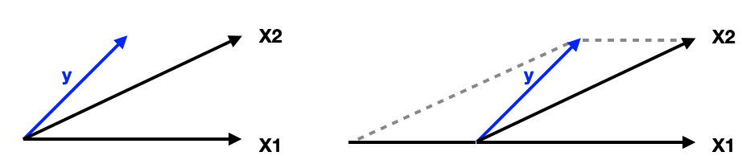
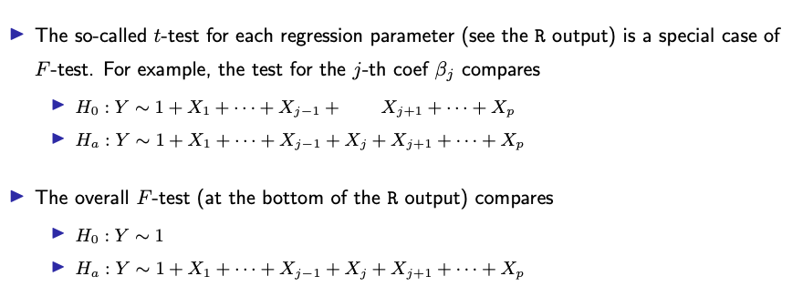
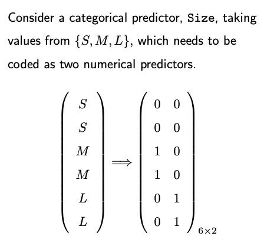
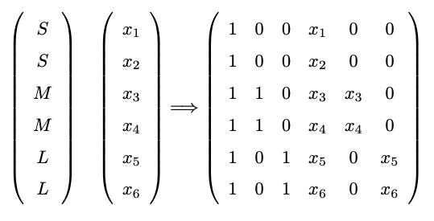

2.3. Practical issues
2.3.1. Analyzing Data with R/Python
- Rcode:
2.3.2. Interpret LS Coefficients
The linear regression coefficient, beta_j, quantifies the change in Y for a unit change in X_j while holding all other predictors constant.
It’s noteworthy that results from Simple Linear Regression (SLR), which involves only one non-intercept predictor, might differ from results in Multiple Linear Regression (MLR), which incorporates multiple predictors. This divergence can arise due to correlations among predictors.
For instance, consider the case where a predictor X1 is positively correlated with some predictors that have a positive effect on the response. In a joint model (MLR), the coefficient for X1 may appear negative, seemingly contrary to its positive effect in an isolated model (SLR). This adjustment compensates for the positive contribution introduced by other predictors, ensuring that the overall model accurately represents the relationships between predictors and the response variable.
Consider an example in which the three vectors, X1, X2, and y, are in a 2D space. The data vector y can be expressed as a linear mix of X1 and X2. Running a regression on y against only X1 or X2 would yield positive coefficients. Yet, in a combined model, X2 still gets a postive coefficient due to its proximity to y, but X1 might need a negative coefficient to balance the equation.
{kind=link}
The textbook “Element of Statistical Learning” offers an algorithm to derive the least squares coefficient \(\hat{\beta_k}\) from a simple linear regression model:
First, regress Y against all predictors but X_k and get the residual, termed Y_star.
Regress X_k against all other predictors and obtain the residual, labeled Xk_star.
Then, run a regression of Y_star against Xk_star. The coefficient from this regression will be equal to \(\hat{\beta_k}\).
2.3.3. Hypothesis Testing
Let’s delve into hypothesis testing in linear regression models. If you’re to remember just one hypothesis testing procedure from linear regression, it’s the F-test.
In the F-test, we’re essentially contrasting two models:
null model (H0): the baseline model.
alternative model (H1, or Ha): contains additional predictors or parameters.
These models must be “nested.” This means the alternative model can encompass the null model as a specific case. For instance, the alternative model might include an additional predictor, say X3. If we assign the coefficient of X3, denoted by beta_3, a value of zero in the alternative model, it effectively reduces to the null model.
In linear regression, adding a predictor will invariably decrease the residual sum of squares (RSS). This means the RSS from H1 will always be less than or equal to that of H0. Consequently, the alternative model will typically have more parameters than the null model. We can denote these parameters as p_a for the alternative model and p_0 for the null.
Our next step? Construct a test statistic. This will encapsulate the evidence within the data that challenges the null hypothesis in favor of the alternative. The strength of this evidence determines whether we reject the null hypothesis.
The F-test statistic is the difference in RSS values divided by the difference in the number of parameters between the two models. Remember, the RSS of the alternative model (RSS_a) is always less than that of the null (RSS_0), making our numerator always positive. This can be seen as the variance per added parameter that the null model cannot capture but the alternative can.
However, we must normalize this difference by an estimate of the variance \(\sigma^2\). While we don’t know the true value of \(\sigma^2\), we can estimate it using either the null or the alternative model. But here’s a thought: If we’re uncertain about the validity of the null model, then the residuals of the null model may contain unaccounted signals. Hence, it might not be wise to use the null model’s residuals to estimate \(\sigma^2\). A better choice might be the alternative model’s estimate.
The F statistic’s magnitude can inform our decision to reject the null. But there’s a crucial question: how big is “big enough”? This leads us to the p-value. Software nowadays presents the p-value, a value between 0 and 1. A small p-value means stronger evidence for the alternative hypothesis. A common threshold is 5% or 1%.
In R/Python output, you might notice the t-test result for each regression coefficient. This is a special case of the F-test. For instance, testing for the coefficient beta_j is equivalent to an F-test comparing two models: one without the predictor X_j (null) and the original full model (alternative).
{kind=link}
The overall F-test, also displayed in R/Python outputs, evaluates the entire set of predictors (alternative) against a model with just an intercept (null). You may recall a measure called R-square, which quantifies how well the set of predictors model the response variable.
The F statistic from the overall F-test and R-square have a one-to-one transformation relationship. If you know one, you can directly determine the other. We won’t delve into the exact mathematical formula here, but for those curious, this transformation can be easily found online.
Understanding Low R-Squared and Significant F-Test
Earlier, we discussed how R-square by itself doesn’t directly signify the significance of the predictors. To assess the overall significance of the predictors, F-test is employed.
It’s entirely possible to encounter situations where R-square is small, indicating a weak fit, yet the F-test shows significance. A notable driver of this paradox is the sample size.
Consider a simple linear regression model with predictor X, which follows a standard normal distribution. The outcome, Y, follows a linear relationship with X with a coefficient of 0.1. The error term follows a standard normal distribution. With a small sample size, say 20, data generated from this model often won’t produce a significant F-test. However, as the sample size increases to 200 or even 2,000, the F-test can frequently indicate significance even if R-square remains low.
Why does this happen?
R-square measures the square of the correlation between the data vector y and the LS fit y-hat.
The F-test determines whether the observed linear relationship could have arisen by random chance. Specifically, it evaluates if the true correlation is zero.
While the F-test gauges the significance of this correlation, R-square measures the strength or magnitude of the correlation.
A large sample size can sometimes highlight even the most subtle relationships, making them statistically significant. This is akin to using a highly accurate machine that flags a blood pressure reading of 100.001 as different from 100—even if this difference isn’t clinically relevant.
2.3.4. Handle Categorical Variables
How to convert categorical variables into a numerical format? Use one-hot encoding.
{kind=link}
For example, for the categorical variable ‘size’ with values small (s), medium (m), and large (l), the one-hot encoded matrix would consist of two columns.
Why k-1 columns? For a categorical variable with k levels, if including all k dummy variables, we will introduce perfect multicollinearity in our model. Therefore, we always drop one level when doing one-hot encoding for regression.
Reference Level: The category that’s omitted (and not given a separate column) is the “reference level.” Its effect is absorbed into the intercept. There’s no strict rule for choosing the reference category. It often depends on the research question or the practical context.
Interpretability: By selecting a reference category, you make your regression coefficients interpretable in relation to that category. For example, the coefficient for “medium (m)” would represent the difference in the dependent variable for ‘medium’ compared to ‘small’ (if ‘small’ is the reference category). Similarly, the coefficient for “large (l)” would be the difference in the dependent variable for ‘large’ compared to ‘small’.
Interaction between a Dummy Variable and a Continuous Variable: Assume in addition to the categorical variable ‘size’, we also have a continuous variable called ‘price.’ The interaction terms can be created by multiplying the dummy coded columns for ‘size’ by the continuous ‘price’ variable. The resulting design matrix would appear as follows (consider how to interpret the coefficients):
{kind=link}
It’s also worth noting that while the dummy variable approach is common, it’s not the only way to handle categorical variables. Other methods include ordinal encoding (when there is a clear order in the categories, like low, medium, high); frequency (or count) encoding (replace categories by the count or frequency of observations); and contrast encoding.
2.3.5. Collinearity
Collinearity arises when predictors in a regression model are closely related or have high correlations with one another. In this case, the contribution of a particular predictor could be masked by other predictors, which create difficulties for statistical inference on the coefficients beta.
You can check our analysis on the car seat position data. The study aims to ascertain if the ‘hipcenter’ can be accurately predicted using other measurements. A quick glance at these variables reveals that some are highly correlated—like ‘height with shoes’ and ‘height without shoes’.
Visualize this through a pairwise plot. Notice that many data points lie near a straight line, indicating pronounced pairwise collinearity. A stark example emerges when we plot ‘height’ (x-axis) against ‘height with shoes’ (y-axis), showing clear correlation.
Now, consider a linear regression model where ‘hipcenter’ is the response variable, and the other measurements are predictors. The summary of this least squares fit is intriguing:
R-square is quite high, signifying a good model fit.
The overall F-test is highly significant, highlighting that the predictors collectively play a crucial role in determining the response variable.
However, none of the individual predictors has a p-value below 0.05.
This perplexing outcome arises due to the presence of collinearity. Even if ‘height’ independently predicts ‘hipcenter’, the model assesses its contribution after considering other correlated predictors, like ‘height with shoes’. Given the high correlation between them, ‘height’ won’t appear to add significant predictive power.
Consequences of Collinearity
Often results in a high R-square and a significant F-test, but insignificant p-values for individual predictors.
A predictor’s importance might be overshadowed by others, complicating the interpretation of individual coefficients.
If your focus is on understanding the influence of individual predictors (i.e., interpreting the coefficients), you must address collinearity. This can be achieved by:
Omitting some predictors.
Combining predictors, e.g., via Principal Components Analysis (PCA).
On the other hand, if your primary aim is prediction, collinearity poses fewer concerns.
2.3.6. Assumptions and Outliers
LINE Assumptions:
L (Linear function): The regression function is a linear function of X. This isn’t strictly an assumption; if the true function isn’t linear, the regression will return the best linear approximation.
I, N, E (Independently Normally distributed Errors): Error terms are ideally assumed to be normally distributed, independent, and have constant variance. However, it can be relaxed to just uncorrelated, mean zero and constant variance. If errors have different variances, then weighted least squares would be more appropriate.
Sampling of X’s:
While there’s no strict assumption on the X’s (predictors), having them uniformly sampled ensures information coverage across the feature space. If Xs are clustered in specific regions, predictions in unsampled regions might not be accurate.
Outlier Testing:
There’s a formal outlier test in linear regression based on leave-one-out prediction error. However, for large datasets, applying these tests might not be recommended because:
Type I error accumulation: In large datasets, the chances of making a type I error (false positive) increase.
Multiple Outliers: The design of standard outlier tests assumes one outlier at a time, making it less useful if there are multiple outliers.
Large p: With many predictors, variable selection becomes necessary, complicating the outlier test.
Instead of formal tests, it’s often more practical to manually inspect and remove obvious outliers or use domain knowledge. For instance, if a variable mostly lies between 0 and 1, but some values are 999, it’s a red flag.
Practical Recommendations:
Always inspect the data for abnormal values or codes indicating missing values.
Transform right-skewed variables to ensure better performance and interpretability.
Apply capping to manage extreme values. For instance, if there’s a house with 12 bathrooms in a dataset where most houses have 1-4, it might be reasonable to cap that at 4.
In conclusion, while understanding the assumptions of linear regression is crucial, practical considerations and domain knowledge play an essential role in dealing with real-world datasets. Instead of obsessing over strict adherence to assumptions or formal tests, the primary goal should be to understand the data and ensure the model captures the underlying patterns effectively. If the model fits well and generalizes well to new data, then it’s likely that the assumptions are either sufficiently met or that any violations aren’t severely impacting the results.